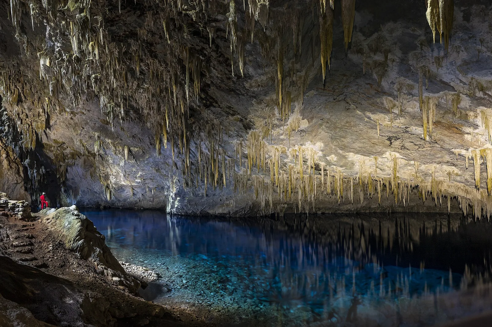
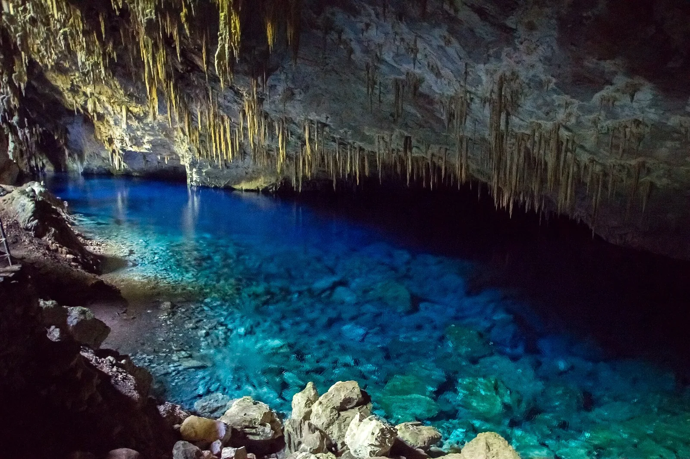
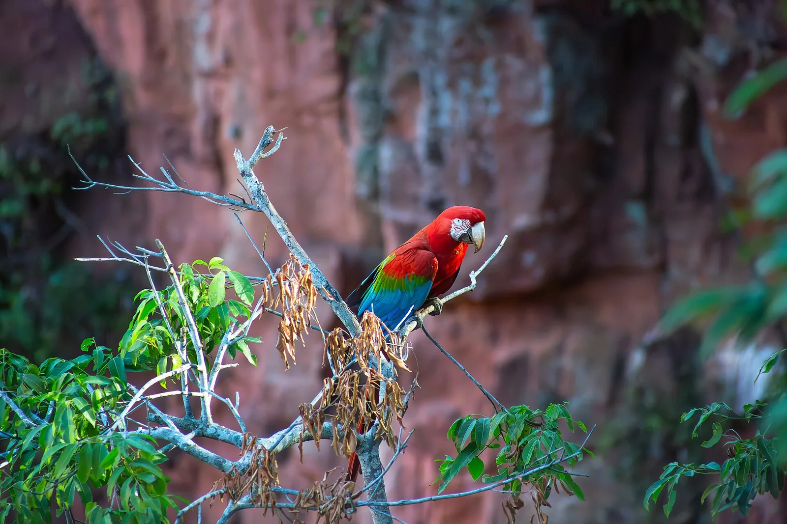

E5 · Este
E5 · Osten
E5 · East
Bonito
Vi piscinas de agua azul adentro de cuevas de piedra
Ich sah Becken aus blauem Wasser im Inneren von Steinhöhlen
I saw pools of blue water inside caves of stone
Información
El Monumento Natural da Gruta do Lago Azul protege 273,66 hectáreas en el municipio de Bonito, en Mato Grosso do Sul, y fue creado en 2001. Lo administra el Instituto de Medio Ambiente de Mato Grosso do Sul.
La caverna se abre por una boca circular de unos 40 metros de diámetro y baja por un salón inclinado hasta un lago subterráneo de más de 50 metros de extensión. Es una de las cavidades inundadas más grandes del mundo, y el origen exacto de su color azul y su profundidad todavía no están establecidos.
En el fondo del lago se encontraron huesos fósiles de mamíferos extinguidos que vivieron ahí hace más de doce mil años, en el Pleistoceno: perezosos gigantes, gliptodontes y tigre dientes de sable. La gruta forma parte del complejo de cavernas de la Serra da Bodoquena.
Information
El Monumento Natural da Gruta do Lago Azul protege 273,66 hectáreas en el municipio de Bonito, en Mato Grosso do Sul, y fue creado en 2001. Lo administra el Instituto de Medio Ambiente de Mato Grosso do Sul.
La caverna se abre por una boca circular de unos 40 metros de diámetro y baja por un salón inclinado hasta un lago subterráneo de más de 50 metros de extensión. Es una de las cavidades inundadas más grandes del mundo, y el origen exacto de su color azul y su profundidad todavía no están establecidos.
En el fondo del lago se encontraron huesos fósiles de mamíferos extinguidos que vivieron ahí hace más de doce mil años, en el Pleistoceno: perezosos gigantes, gliptodontes y tigre dientes de sable. La gruta forma parte del complejo de cavernas de la Serra da Bodoquena.
Information
El Monumento Natural da Gruta do Lago Azul protege 273,66 hectáreas en el municipio de Bonito, en Mato Grosso do Sul, y fue creado en 2001. Lo administra el Instituto de Medio Ambiente de Mato Grosso do Sul.
La caverna se abre por una boca circular de unos 40 metros de diámetro y baja por un salón inclinado hasta un lago subterráneo de más de 50 metros de extensión. Es una de las cavidades inundadas más grandes del mundo, y el origen exacto de su color azul y su profundidad todavía no están establecidos.
En el fondo del lago se encontraron huesos fósiles de mamíferos extinguidos que vivieron ahí hace más de doce mil años, en el Pleistoceno: perezosos gigantes, gliptodontes y tigre dientes de sable. La gruta forma parte del complejo de cavernas de la Serra da Bodoquena.
Galería
Galerie
Gallery



Fuentes
Quellen
Sources
- Instituto de Meio Ambiente de Mato Grosso do Sul (Imasul), Monumento Natural da Gruta do Lago Azul — https://www.imasul.ms.gov.br/monumento-natural-gruta-do-lago-azul/ consultado 2026-10-05abgerufen 2026-10-05accessed 2026-10-05
- Instituto de Meio Ambiente de Mato Grosso do Sul (Imasul), Plano de Manejo do Monumento Natural da Gruta do Lago Azul (PDF) — https://www.imasul.ms.gov.br/wp-content/uploads/2022/07/PM-MNGLA.pdf consultado 2026-10-05abgerufen 2026-10-05accessed 2026-10-05